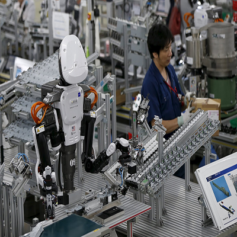

por Carlosfreitas - AlexandreBecker - GabrielPortilho
atualizado em 20/março/2018
O que é
A Inteligência Artificial (IA) faz parte da próxima onda de inovação, trazendo grandes mudanças na maneira como pessoas e empresas se relacionam com a tecnologia e como as coisas funcionam.
Desde a revolução industrial, a evolução das ferramentas que aumentam as capacidades humanas é constante. Com a tecnologia, não é diferente.Assim como a chegada do computador pessoal, da computação
em nuvem e dos smartphones, a IA é a tecnologia artificial que leva você para onde quer chegar, de forma muito mais rápida, intuitiva e inteligente.

Inteligência ArtificialO futuro das Coisaspor Carlosfreitas atualizado em 20/março/2018